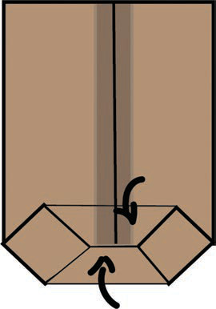

Steps for making boxes
- 1. Choose the box size you want to make and strip it carefully by following the joints. Figure 14 shows samples of boxes of different sizes;
Figure 14: Boxes of different sizes